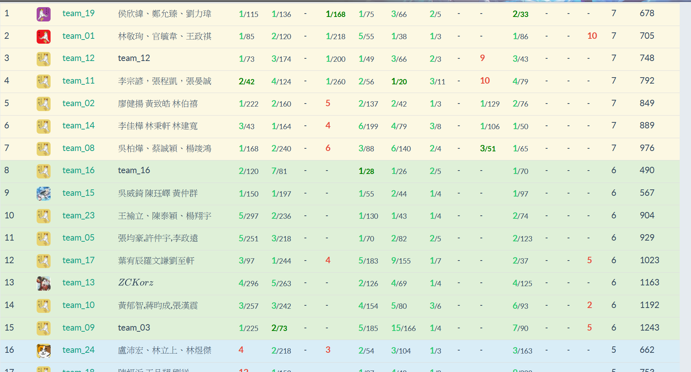

2021IOIC-Day5
最後一天了QQ，優質營隊就這樣結束了。
今天沒有上課，就比一場五小時的團體賽。
前言
早上起床開始收拾行李，昨晚原本想好要在退房時跟室友說聲謝謝指教之類的，但我起床時就忘記這件事了@@。
到了德田館後我發現我很累，所以就戴著耳機玩音遊讓自己醒腦。
一回過神發現整間教室都不見了，原本想說那就待在這裡好了，但我突然想到連助教都不在鬧空城，這件事肯定不正常。
所以我跑到樓下去看，發現他們正要拍大合照，幸好我有下來看QQ，差點被遺棄。
一直在補blog的心得文，後來比賽就要開始了，10點到下午三點，我還是很不擅長打5小時的比賽。
不過因為題目還沒放好，所以比賽延後十分鐘才開始。
比賽過程
我們其實沒有擬定什麼策略owo，所以就到處開題跟題。
發現有人開場不久就ac了，就開始跟吧。
結果是個語法水題，拿下後就繼續看其他題。
FHvirus看到pA後就覺得他是最小割，我覺得蠻合理的，但寫dinic好麻煩喔，且我不知道怎麼在無向圖上跑flow。但其實我的想法是用類似kruskal，然後greedy的砍邊。
後來他寫了dinic後測範測是爛的，我就跟他說應該是要用dsu來greedy，他就這樣寫。
我就繼續到處開題，發現pB是個實作題，維護set就好。但是gary(我們第三個隊友)對這題蠻有興趣的，我就讓他寫。
有一題又是像昨天的賽局論，還不確定是梗題還是真的要算SG value之類的，但已經有幾個ac了。
發現到有一題是裸裸ㄉ字串匹配，所以寫個hash她就變綠了(我還是懶得寫KMP或Z)
FHvirus的dsu code也寫好了，範測是好的所以就傳上去，然後wa了。
我幫他看一下發現沒什麼問題，一起想幾個反例發現想不到。
所以我就給他繼續debug，我來想賽局。
後來想超久，一直想不到，中間還出去上廁所吃點心。
越來越多人ac這題，超級多人。
最後用特徵值去推才發現他其實是梗題，跟fhvirus確認想法之後丟上去過了，不過想超久，所以penalty超高。
我們繼續看pA的code，還是沒有想法。
開始燒雞，偶爾看pA，偶爾看其他題，卻都沒什麼想法。
有一題期望值的交給fhvirus去推式子，他有發現是ac自動機，但她抄模板寫出來後debug才發現會有自環的問題。
我提議說我自己重寫pA看看，想當然還是wa。
此時已經三個多小時了，gary砸了兩個多小時還是沒過範測，所以我就把這題給搶過來寫。
後來寫了大概20分鐘，中間有換個寫法，測範測是好的就上傳。
結果wa掉，想了五分鐘後想到還有取整的問題，明明開場看到這題時就有想到，結果過兩個小時就忘了@@。
改掉後就ac了，但因為拖了很久所以penalty大爆炸。其實gary寫到後面心態就已經很差了，我們中途有叫他出去吃點心或者寫太久就放手，但她完全沒出去吃點心在砸那題。然後就被我搶走，我有點愧咎。
之後繼續燒雞，到了最後兩分鐘後我們就攤手等著比賽結束。同時還在看著pA。
他又把他的dinic拿出來看哪裡錯，我發現到他有存後就也跟著看。
發現到他的某個函式亂改@@，他以為無向圖中這樣改會等價，但我覺得並沒有。然而因為沒時間了來不及重打main code(他只有存dinic的部分)，所以我們也沒改。
不過三點了並沒有結束，我們才想到有延後十分鐘。
因為時間很充裕，所以我們就決定賭一把，fhvirus把dinic模板改回講義上的後就開始飛快的打main code，這邊我們團隊分工真的很棒，我負責告訴她輸入格式以及要開哪些陣列還有要寫什麼，他就負責coding。
弄好後測範測還是爛的，當前剩下五分鐘。
我臨時想到可以繼續使用kruskal的想法來做兩次，後來測範測是過的，傳上去後發現ac了…在比賽倒數三分鐘的時候。
看到ac的那刻我忍不住叫了一聲，然後我和fhvirus就超級激動XDD，這感覺超棒。
不過愧疚感油然而生，全都是我一開始假解亂Claim greedy作法還一直執著在上面。如果一開始就相信是最小割然後檢查code應該就能很早過這題。
比較特別的是那題梗題居然全場ac，還有pA一大堆人寫出來，大家都會dinic嗎@@
幸好那兩題都有寫出來，不然就被打爆了(雖然還是被penalty打爆)。
波路特石又出了一題超噁心的資料結構題，真的超強orz。
之後就去吃拉麵了
賽後
因為人很多所以分批，我跟著joylintp所帶領的實中團，然後前兩天晚上在房間內的六個人剛好都在這團XD。
去了中山站吃鳥人，吃完後去西門的animate，後來又走去北車打機。
在走到站前時PixelCat還不知道已經到北車了XD，他不知道西門跟北車近到是能走路就到的距離。
maimai splash在兩天前於台灣稼動，一直很想去打，實際去打覺得除了多很多新歌以外沒什麼差別@@。
我覺得第五天的結果算是讓我最滿意的了，297分鐘寫出pA讓我們名次有往上飛，不過penalty超高，但這刺激感超棒的。

總結
這個營隊真的帶給我很多東西，雖然上課的緊湊方式很難完全吸收，但這就是這個營隊的特色吧。塞很多東西給你，你要做的是把她聽進去後，回家配著講義消化他們。
所以講師們都把講義都寫得能靠自讀來學會，真的很謝謝講師們。
也一次被灌了很多不會的東西，接下來到初選前有得忙了。